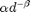
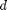
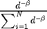

Contents
classdef PeakCalling<handle
Description
The PeakCalling class applies the peakCalling procedure to find peaks in an expression arrays. The input is a matrix of n signals of the same length
Class Properties
the peakCalling class includes several public properties such as
properties
params
numSignals@double
signals
expectedSignal
zScores
globalMinZ
backgroundDistribution
signalDistribution
rejectionValDistribution
backgroundRejectionVal % rejection value using the background distribution
signalRejectionVal
rejectionTval
peakList
end
Class Public Methods
methods
function obj = PeakCalling()
Class constructor
obj.SetDefaultParams;
end
function SetDefaultParams(obj)
Parameters
- peaksDirection indicate wheather the high peaks the low peaks or both sides are analyzed [high/low/twoSides]
- smoothingSpan Smoothing span is an integer specifing the size of the moving average window in the loess smoothing of the background signal
- fitType method of estimating the background signal from the data. Options are [mean/loess/model] default: loess model fits the data with  with  the integer distance between observations.
- minimumZSapmples minimum z scores for which the analysis of peaks is performed. default:10
- pValueThreholdMethod the method to estimate the p value threshold
- checkPeaksForLocalMaximality check if the found peaks are also peaks in their local environment. The environment size is determind by peakExludeNeighborhoodSpan
- fitModel the background signal model to fit  in case fitType=model
obj.params.peaksDirection = 'high'; % find peaks in high/low/twoSides obj.params.smoothingSpan = 10; % smoothing span for the loess smoothing obj.params.fitType = 'loess'; % options [model/loess/mean] obj.params.minimumZSamples = 10; % minimum number of z values required to fit a distribution obj.params.pValueThresholdMethod = 'fdr'; % how to set the new threshold for the zScores [fdr/pDistribution] obj.params.checkPeakForLocalMaximality = true; % check if the peak is also locally a peak % fOptions applies only for fitType=model obj.params.fitModel = fittype(@(slope,x)(1./(sum(x.^(-slope)))).*x.^(-slope));% in case of fitType='model' obj.params.fOptions = fitoptions(obj.params.fitModel); obj.params.fOptions.TolX = 1e-8; obj.params.fOptions.TolFun = 1e-8; obj.params.fOptions.MaxFunEvals = 1e3; obj.params.fOptions.MaxIter = 1e3; obj.params.fOptions.StartPoint = 1.5; % [slope] % applies for fitType=model obj.params.fOptions.Lower = 0.05; % [slope] obj.params.fOptions.Robust = 'Bisquare'; % Statistics optimization params obj.params.backgroundZDistribution = 'wbl'; obj.params.signalZDistribution = 'wbl'; obj.params.rejectionValDistribution = 'wbl'; obj.params.stOptions = statset('Robust','on',... 'TolFun',1e-12,... 'TolX',1e-12,... 'MaxFunEvals',1e5,... 'MaxIter',1e5,... 'TolTypeFun','rel',... 'TolTypeX','rel',... 'RobustWgtFun','bisquare'); obj.params.peakExludeNeighborhoodSpan = [5, 10, 15]; % the radius of the neighborhood around each peak used for the scoring of the peak. only applicable if checkPeakForLocalMaximality=true obj.params.rejectionThresh = 0.98; % set the cdf value for the background signal rejection obj.params.rejectionTNew = 0.99; % the rejection region of the distribution of (rejections values - background rejection)/std(rejection) end function FindPeaks(obj, signals) obj.numSignals = size(signals,2); % obj.signals = obj.MakePositive(signals); obj.signals = signals; obj.EstimateBackgroundSignal; obj.CalculateZScores obj.CalculateBackgroundDistribution; obj.CalculateZScoreDistribution obj.CalculateRejectionDistribution obj.MarkPeaks obj.ExcludePeaksByLocalMaximality % obj.ApplyFDROnPeaks end function EstimateBackgroundSignal(obj) % Calculate the expected signal if strcmpi(obj.params.fitType,'model') m = obj.MeanIgnoreNaN(obj.signals); d = 1:numel(m); [f, ~] = fit(d',m',obj.params.fitModel, obj.params.fOptions); obj.expectedSignal = (1/sum(d.^(-f.slope)))*d.^(-f.slope); elseif strcmpi(obj.params.fitType,'loess') % The median is used since distances with sparse % observations but high peaks are sensitive to the high % peaks m = obj.MeanIgnoreNaN(obj.signals); obj.expectedSignal = smooth(m,obj.params.smoothingSpan); % smooth the median signal obj.expectedSignal = obj.expectedSignal./sum(obj.expectedSignal); elseif strcmpi(obj.params.fitType,'mean') obj.expectedSignal = obj.MeanIgnoreNaN(obj.signals);% leave it as the mean at each distance elseif strcmpi(obj.params.fitType,'median') obj.expectedSignal = obj.MedianIgnoreNaN(obj.signals);% leave it as the median at each distance end end function CalculateBackgroundDistribution(obj) % Esstimate the distribution over all distances % combine all z Score from all distances, assuming they have % similar background z distribution z = obj.zScores(:); inds = ~isnan(z); obj.backgroundDistribution = fitdist(z(inds),obj.params.backgroundZDistribution,... 'Censoring',z(inds)==eps,'options',obj.params.stOptions); obj.backgroundRejectionVal = obj.backgroundDistribution.icdf(obj.params.rejectionThresh); end function CalculateZScores(obj)% first truncate, then calculate the std? % For each site, calculate the z score obj.zScores = nan(size(obj.signals,1),size(obj.signals,2)); s = zeros(1,size(obj.signals,2)); for dIdx = 1:size(obj.signals,2) inds = ~isnan(obj.signals(:,dIdx)); if sum(double(inds))>obj.params.minimumZSamples if strcmpi(obj.params.peaksDirection,'twoSides') z = (abs(obj.signals(inds,dIdx)-obj.expectedSignal(dIdx))); elseif strcmpi(obj.params.peaksDirection,'high') z = (obj.signals(inds,dIdx)-obj.expectedSignal(dIdx)); elseif strcmpi(obj.params.peaksDirection,'low') warning('peaksDirection=low is unsupported yet, changing to twoSides') z = (abs(obj.signals(inds,dIdx)-obj.expectedSignal(dIdx))); end obj.zScores(inds,dIdx) = z; % calculate the standard error s(dIdx) = std(obj.signals(inds,dIdx));%/sqrt(sum(double(inds))); if s(dIdx)~=0 obj.zScores(inds,dIdx) = obj.zScores(inds,dIdx)./s(dIdx); end obj.zScores(obj.zScores(:,dIdx)<=0,dIdx)=nan; else % keep it nan end end [obj.globalMinZ.value, obj.globalMinZ.signal] = obj.MinIgnoreNaN(obj.zScores(:)); [obj.globalMinZ.signal, ~] = ind2sub(size(obj.signals),obj.globalMinZ.signal); if obj.globalMinZ.value<0 obj.zScores = obj.zScores-obj.globalMinZ.value+eps; end end function CalculateZScoreDistribution(obj) % Calculate the zScores for the signals for dIdx = 1:size(obj.signals,2) inds = ~isnan(obj.zScores(:,dIdx)); obj.signalDistribution(dIdx).dist = makedist(obj.params.signalZDistribution); z = obj.zScores(inds,dIdx); if numel(z)>obj.params.minimumZSamples cens = z==eps; obj.signalDistribution(dIdx).dist = fitdist(z,obj.params.signalZDistribution,... 'Censoring',cens,... 'options',obj.params.stOptions); % Calculate the value for above which we treat observations as % peaks obj.signalRejectionVal(dIdx) = obj.signalDistribution(dIdx).dist.icdf(obj.params.rejectionThresh); else obj.signalRejectionVal(dIdx)=eps; end end end function CalculateRejectionDistribution(obj) % Calculate the distribution of the difference between rejection % region of signals and rejection region of background % the rejection val for the peaks is determined wither by the % outliers of the threshold value distribution or by using fdr if strcmpi(obj.params.pValueThresholdMethod,'pDistribution') tVal = obj.signalRejectionVal; % subtract the mean values from the rejection distribution tVal = tVal(tVal~=eps); % Fit this statistic with a distribution of choice obj.params.stOptions.Robust = 'on'; obj.rejectionValDistribution = fitdist(tVal',obj.params.rejectionValDistribution,... 'options',obj.params.stOptions); % set the new rejection value obj.rejectionTval = obj.rejectionValDistribution.icdf(obj.params.rejectionTNew); elseif strcmpi(obj.params.pValueThresholdMethod,'fdr') r = zeros(1,numel(obj.signalDistribution)); for dIdx = 1:numel(obj.signalDistribution) r(dIdx) = obj.signalDistribution(dIdx).dist.cdf(obj.backgroundDistribution.cdf(obj.backgroundRejectionVal)); end % apply fdr on the pValues q = mafdr(r,'Method','bootstrap','Lambda',(min(r)+eps):.0001:max(r),'Showplot',false); % take the minimal value obj.rejectionTval = obj.backgroundDistribution.icdf(min(1-q(q<(1-obj.params.rejectionTNew)))); if isempty(obj.rejectionTval) obj.rejectionTval = obj.backgroundDistribution.icdf(1); end end end function MarkPeaks(obj) % Return to the zScores and eliminate type I errors peaks = (obj.zScores)>(obj.rejectionTval); [obj.peakList(:,1),obj.peakList(:,2)] = find(peaks);% output in the form of (bead1, bead2) end function ExcludePeaksByLocalMaximality(obj) % Check for peaks local neighborhood and exclude peaks if obj.params.checkPeakForLocalMaximality includeList = false(size(obj.peakList,1),1); for pIdx = 1:size(obj.peakList,1) % Examine the local behavior of peaks around the reported % peak peakNum = obj.peakList(pIdx,2); pv = false(numel(obj.params.peakExludeNeighborhoodSpan),1); for dIdx = 1:numel(obj.params.peakExludeNeighborhoodSpan) % indices of peak neighborhood inds = max(1,peakNum-obj.params.peakExludeNeighborhoodSpan(dIdx)):... min(size(obj.signals,2),peakNum+obj.params.peakExludeNeighborhoodSpan(dIdx)); % fit a distribution to the zScores in the neighborhood of % the peak peakZVal = obj.zScores(obj.peakList(pIdx,1),obj.peakList(pIdx,2))+obj.globalMinZ.value; inds = setdiff(inds,peakNum);% remove the peak from the dist fitting z = obj.zScores(:,inds)+obj.globalMinZ.value; z = z(:); m = obj.MinIgnoreNaN(z); if m<=0 z = z-m+eps; peakZVal = peakZVal-m+eps; end z = z(~isnan(z)); % remove nan values peakBgDist = fitdist(z,obj.params.backgroundZDistribution,... 'options',obj.params.stOptions); pv(dIdx) = peakBgDist.cdf(peakZVal)>obj.params.rejectionThresh; end % Decide according to the concensus includeList(pIdx) = sum(pv)>=numel(pv)/2; end % filter the peaks obj.peakList = obj.peakList(includeList,:); end end function ApplyFDROnPeaks(obj)%obsolete % Apply FDR on peaks' pvvalues according to background % distribution if ~isempty(obj.peakList) && size(obj.peakList,1)>=2 p = zeros(size(obj.peakList,1),1); for pIdx = 1:size(obj.peakList,1) p(pIdx) = 1-obj.backgroundDistribution.cdf(obj.zScores(obj.peakList(pIdx,1), obj.peakList(pIdx,2))); end if numel(p)> obj.params.minimumZSamples q = mafdr(p,'Method','bootstrap','Lambda',(min(p)+eps):.0001:max(p),'Showplot',false); includeList = q<0.01; % exclude peaks obj.peakList = obj.peakList(includeList,:); end end end function DisplayPeaks(obj) peakMat = zeros(size(obj.signals,1), size(obj.signals,2)); figure, surf(obj.signals),colormap summer, hold on for pIdx = 1:size(obj.peakList,1) % places the zScore value peakMat(obj.peakList(pIdx,1),obj.peakList(pIdx,2))=... obj.zScores(obj.peakList(pIdx,1),obj.peakList(pIdx,2))./mean(obj.zScores(obj.peakList(pIdx,1),:)); % obj.signalDistribution(obj.peakList(pIdx,1)).dist.cdf(obj.zScores(obj.peakList(pIdx,1), obj.peakList(pIdx,2))); plot3(obj.peakList(pIdx,2), obj.peakList(pIdx,1),obj.signals(obj.peakList(pIdx,1), obj.peakList(pIdx,2)),... 'or','MarkerSize',10,'LineWidth',2) end figure, surf(peakMat) end function DisplaySignalDistributions(obj,distType) if ~exist('distType','var') distType = 'cdf';% dist can be cdf of pdf end f = figure; a = axes('Parent', f,'NextPlot','add'); t = obj.MinIgnoreNaN(obj.zScores(:)):.001:obj.MaxIgnoreNaN(obj.zScores(:)); for dIdx = 1:obj.numSignals line('XData',t,... 'YData',obj.signalDistribution(dIdx).dist.(distType)(t),... 'DisplayName',['Distance ',num2str(dIdx)],... 'Parent',a); end % display background distributioin line('XData',t,... 'YData',obj.backgroundDistribution.(distType)(t),... 'DisplayName','Background signal',... 'Parent',a,... 'Color','r',... 'LineWidth',4); % add line representing the rejection line('XData',[obj.rejectionTval obj.rejectionTval],... 'YData',[0 1],... 'Parent',a,... 'Color','r',... 'DisplayName','rejection value',... 'LineStyle','-.'); end function DisplayRejectionValDistribution(obj) f = figure; a = axes('Parent',f,'NextPlot','Add','FontSize',30); for dIdx = 1:obj.numSignals line('XData',dIdx,... 'YData',obj.signalRejectionVal(dIdx),... 'DisplayName',['distance', num2str(dIdx)],... 'Parent',a,... 'Marker','o',... 'MarkerFaceColor','b',... 'MarkerSize',6) end line('XData', [1 size(obj.signals,2)],... 'YData',[obj.rejectionTval obj.rejectionTval],... 'Color','r',... 'Parent',a,... 'LineWidth',4,... 'LineStyle','-.'); line('XData', [1 size(obj.signals,2)],... 'YData',[obj.backgroundRejectionVal obj.backgroundRejectionVal],... 'Color','r',... 'Parent',a,... 'LineWidth',4,... 'LineStyle','-'); end function DisplayZScoreFit(obj,dist) % display the distribution of z score for a certain distance f = figure; a = axes('Parent',f,'NextPlot','Add'); if ~exist('dist','var') dist = 1:size(obj.signals,2); end for dIdx =1:numel(dist) if sum(~isnan(obj.zScores(:,dist(dIdx))))>obj.params.minimumZSamples [v,e] = ecdf(obj.zScores(:,dist(dIdx))); line('XData',e,... 'YData',v,... 'Parent',a,... 'DisplayName',['empirical CDF distance ', num2str(dist(dIdx))] ) line('XData',e,... 'YData',obj.signalDistribution(dist(dIdx)).dist.cdf(e),... 'Color','r',... 'Parent',a,... 'DisplayName',['fitted CDF distance ', num2str(dist(dIdx))]); else line('XData',nan,... 'YData',nan,... 'Parent',a,... 'DisplayName',['not enough data signal', num2str(dist(dIdx))] ) line('XData',nan,... 'YData',nan,... 'Color','r',... 'Parent',a,... 'DisplayName',['not enough data ', num2str(dist(dIdx))]); end end end function TestZScoreDistributionSimilarityToNull(obj) % for each one of the empirical distribution of the zScore, % test its similarity to the null (background distribution) backgroundSignal = obj.zScores(:); inds = ~isnan(backgroundSignal)&backgroundSignal~=eps; backgroundSignal = backgroundSignal(inds); testResult = zeros(size(obj.zScores,2),1); for dIdx = 1:size(obj.zScores,2) zScore = obj.zScores(:,dIdx); inds = zScore~=eps & ~isnan(zScore); zScore = zScore(inds); if ~isempty(zScore) % run Kolmogorov smirnoff test testResult(dIdx) = kstest2(zScore,backgroundSignal); else testResult(dIdx) = nan; end end figure, plot(testResult,'o'), title('comparison to mean'); % run pairwise distribution end end methods (Access=private) end methods (Static) function m = MeanIgnoreNaN(signalIn) % calculate the mean of a matrix ignoring nan values, % the mean gives the mean of each column m = zeros(1,size(signalIn,2)); for mIdx = 1:size(signalIn,2) inds = ~isnan(signalIn(:,mIdx)); m(mIdx) = mean(signalIn(inds,mIdx)); end end function m = MedianIgnoreNaN(signalIn) % calculate the median of a matrix ignoring nan values, % the mean gives the mean of each column m = zeros(1,size(signalIn,2)); for mIdx = 1:size(signalIn,2) inds = ~isnan(signalIn(:,mIdx)); m(mIdx) = median(signalIn(inds,mIdx)); end end function [m,ind] = MinIgnoreNaN(signalIn) % find the minimum of a signal ignoring NaN values inds = isnan(signalIn); signalIn(inds) = inf; [m,ind] = min(signalIn); end function [m,ind] = MaxIgnoreNaN(signalIn) % Find the minimum of a signal ignoring NaN values inds = isnan(signalIn); signalIn(inds) = -inf; [m,ind] = max(signalIn); end function signalOut = MakePositive(signalIn)% obsolete % Make the signals positive signalOut = signalIn; % m = min(signalOut(:)); % if m<=0 % signalOut = signalOut-m+eps; % end end end end